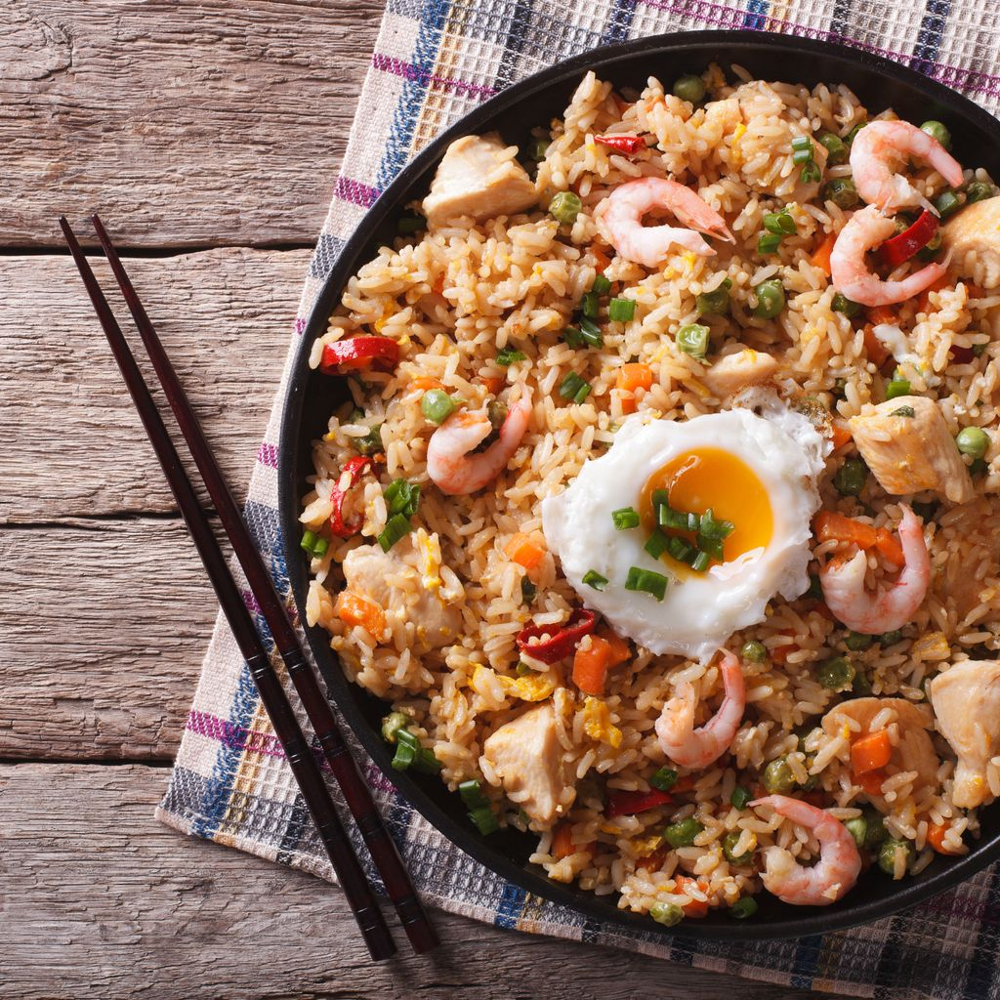
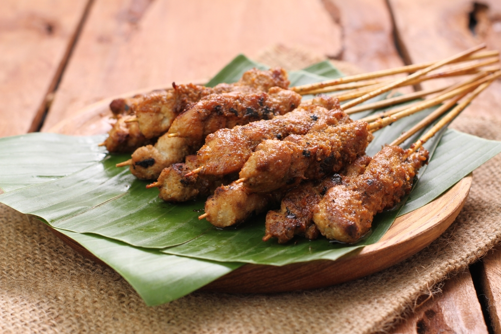
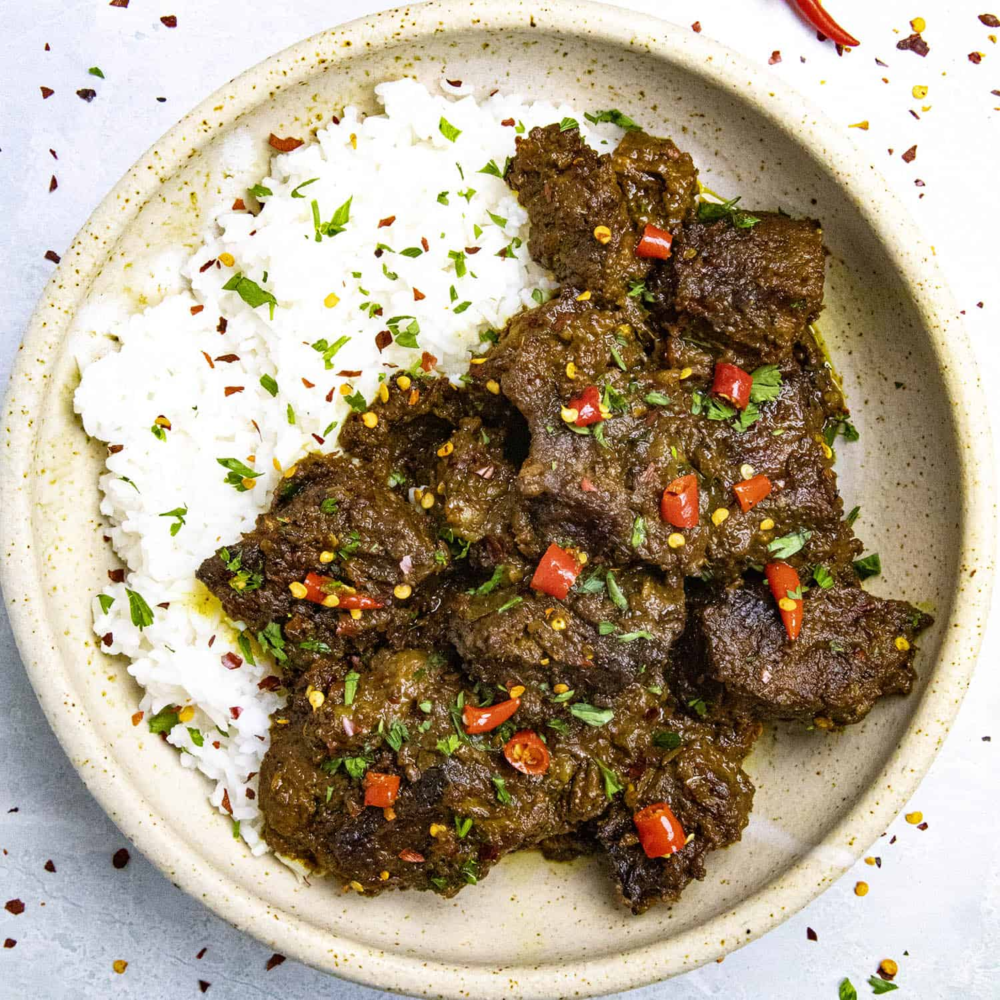
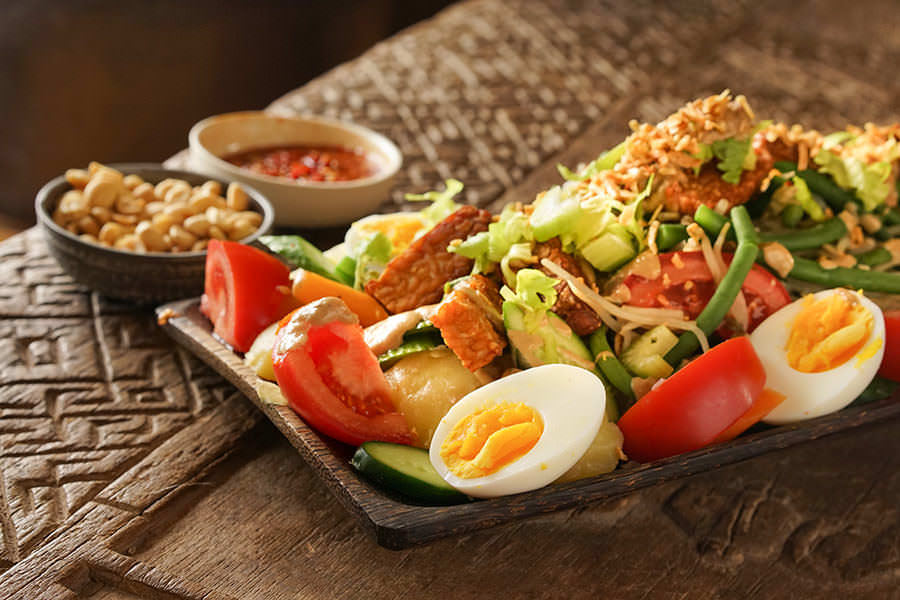

Les saveurs du plus grand archipel du monde sont à l’image de ce pays,
hautes en couleurs et originales. En effet, la cuisine indonésienne s’est développée
au fil de l’histoire, en incluant ainsi des influences néerlandaises mais aussi chinoises,
portugaises et arabes. Bien que notre liste soit non exhaustive, voici quelques spécialités à goûter absolument.
Selamat Makan !
Voici un classement déterminant les plats les plus connus en Indonésie :
Rang
Plat
1
Nasi Goreng
2
Sate Ayam
3
Rendang
4
Mie Goreng
5
Gado-Gado

Nasi goreng :
“Nasi Goreng” signifie “riz frit”. L'idée de base de ce plat est en fait d'éviter le gaspillage alimentaire car,
à l'origine, le riz utiliser pour ce le plat est le reste du dîner ou du déjeuner. Vous trouverez le Nasi Goreng dans
presque tous les lieux, du restaurant cinq étoiles à l'étal de rue. Le bon moment pour manger le plat est également très
polyvalent; que ce soit pour le petit déjeuner ou le dîner, c'est à vous de décider.
Le goût de cette préparation est un mélange typique sucré, salé et un peu épicé. Il existe de nombreux types de
garnitures pouvant entrer dans le Nasi Goreng, comme le poulet émincé, de la saucisse ou du poisson. La garniture
est habituellement complétée de tranches de concombre et d'oeuf.
Vous pouvez goûter ce plat au Nasi Goreng Kambing Kebon Sirih, restaurant à Jakarta spécialisé dans sa confection.
Sate Ayam :
Les “Sate” sont des brochettes essentiellement composé de tranches de viande marinée grillées
enfilées sur des tiges de bambou et grillées sur un feu ouvert au charbon de bois. En Indonésie,
vous pouvez trouver des sate à base de différents types de viandes, comme le poulet, le boeuf, l'agneau,
les pétoncles et le poisson. Avant d'être grillé, la viande sera d'abord marinée avec une sauce savoureuse.
Les sate sont servis avec de nombreux types de garnitures, comme la sauce aux arachides, les échalotes tranchées
et les tomates en dés ou la sauce jaune épicée.
Presque chaque région en Indonésie a sa préparation. Par exemple les “Sate Ayam” (Poulet), “Sate Kambing” (Agneau)
sont les plus populaires sur toute l'île de Java. Pour à Bali, ce sont les “Sate Lilit” qui peuvent être à base de poulet
grillé, de poisson ou de porc préparé avec de la noix de coco râpée et du lait de coco.
Vous trouverez à Bali le Sate Indra, un restaurant spécialisé dans la préparation de Sate.


Rendang :
Le Rendang est une préparation de viande épicée. Il peut être à base de boeuf ou d'agneau. Une assiette
de Rendang propose un mélange de goût épicé et crémeux par une combinaison de piment et de lait de coco.
Certaines personnes pensent que Rendang est similaire au Curry, mais il n’est pas du tout en soupe comme le curry.
Ce plat est originaire de la tribu Minangkabau, de l'ouest de Sumatra, et est généralement servie aux occasions
spéciales comme Eid al-Fitr. Cependant, vous pouvez facilement trouver ce plat dans toute l'Indonésie, en particulier
dans les restaurants Padang.
Mie Goreng :
Le mie goreng aussi connu sous le nom de bami goreng, est un plat à base de nouilles jaunes frites dans
l'huile avec de l'ail, de l'oignon ou des échalotes, des crevettes, du poulet, du porc, du bœuf ou des bakso,
du piment, du chou ou du chou chinois, des tomates, divers autres légumes et des œufs.
C'est un plat très répandu et très prisé que l'on retrouve dans quasiment tous les restaurants et les étals
de l'archipel, de même que le nasi goreng.
Ce plat est dérivé du chow mein chinois, très probablement introduit par les nombreux immigrants chinois
qui se sont établis tout au long de l'histoire dans l'archipel et la péninsule malaise.
On trouve un équivalent au Japon, le yakisoba. Cela dit, le mie goreng s'est profondément adapté à
la culture locale, comme en témoigne l'usage du kecap manis, (sauce soja sucrée), d'échalotes, de sambal,
et l'absence de porc et de lard au profit de crevettes, de poulet ou de bœuf.

Gado gado :
Si vous êtes végétarien ou simplement une personne qui n'aime pas manger de la viande, alors vous pouvez essayer
cette salade traditionnelle indonésienne appelée Gado-gado. Gado-gado signifie fondamentalement "mélange", dérivé
de la façon dont il est servi, qui mélange des légumes cuits à la vapeur avec de la sauce aux arachides.
Une assiette de Gado-gado contient habituellement des épinards cuits à la vapeur, des germes de soja, des haricots
verts et du maïs. Il comprend également du concombre, de la pommes cuite à l’eau, de l’œuf dur ainsi que du tofu et du
tempeh frits. Pour touche finale, ces ingrédients sont mélangés ensemble avec une sauce crémeuse aux arachides. Vous pouvez
également choisir la variété de légumes et le goût de la sauce aux arachides, qui peut être épicée ou sucrée.